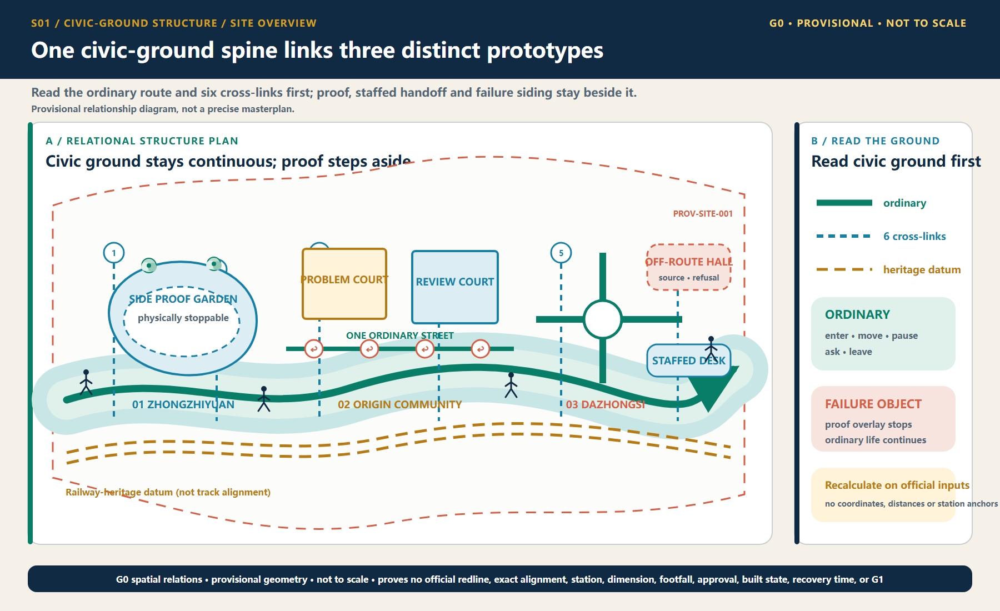
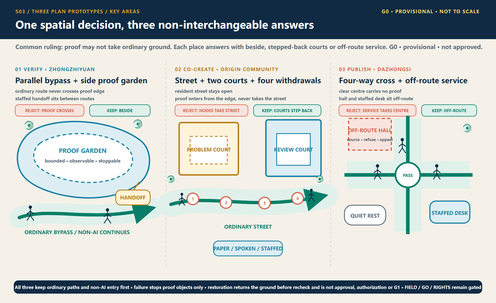
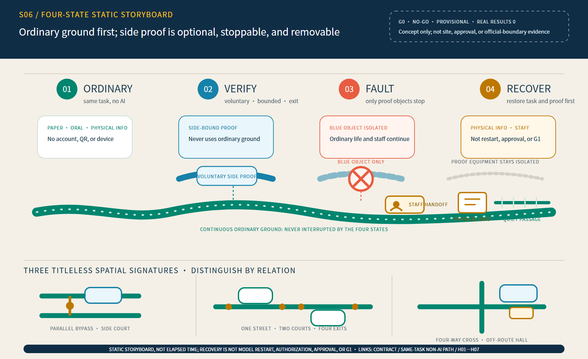
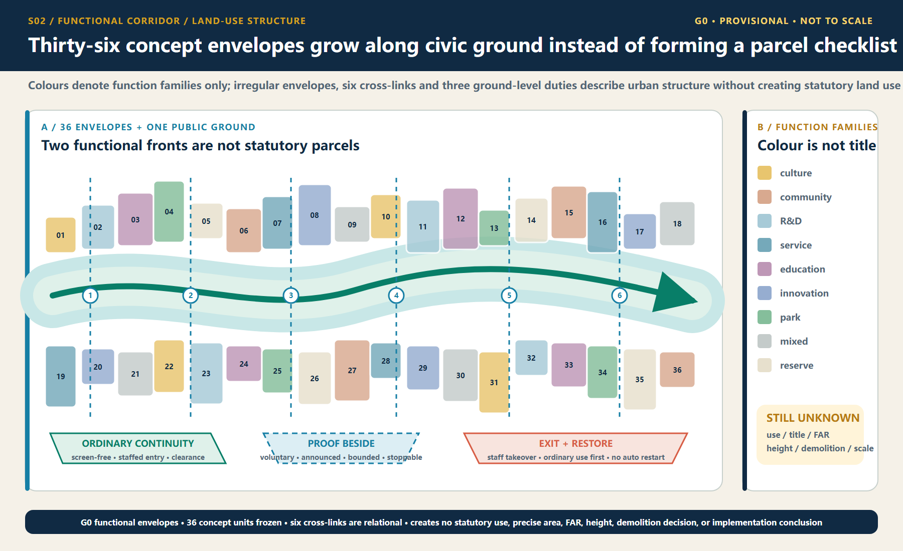
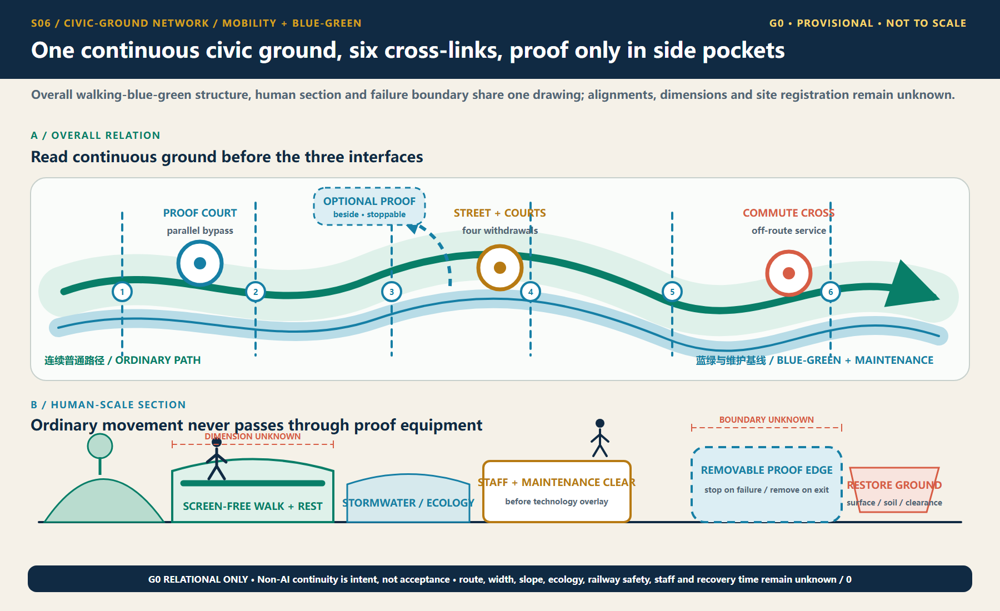
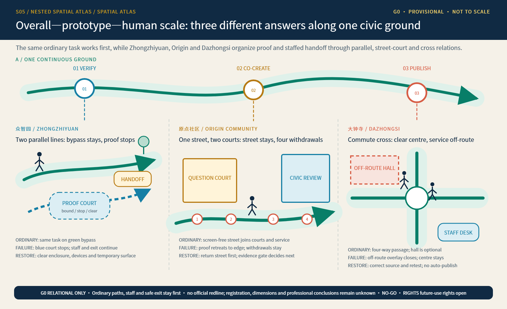
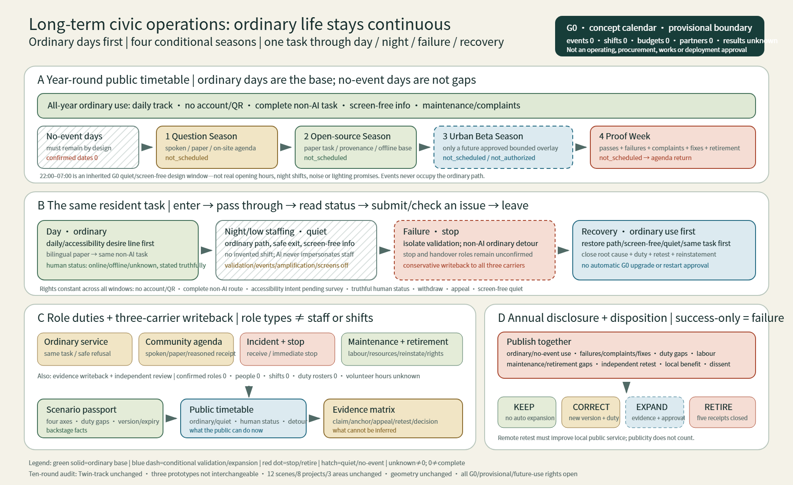
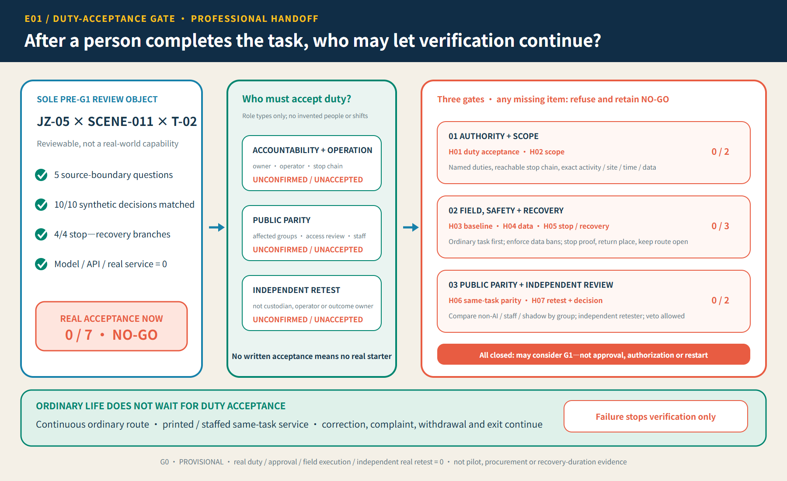

Overview map and three-level transmission

The continuous everyday track comes first; intermittent testing moves to the side.
Choose one place, follow five actions, observe four states, and only then decide whether the side-track test deserves to continue.
Before any AI experience begins, a person must be able to complete the same basic task without an account, QR code, screen, network or AI.

All three prototypes share the same rights floor, but their spatial skeletons, failure objects and restoration actions cannot be exchanged. These expandable views are concept demonstrations, not live services.
People always retain a continuous observation bypass. Only voluntary, authorised and accountable tests enter the side garden. Device isolation may not occupy ordinary passage.
Never remove: continuous bypass, physical emergency stop, human takeover and independent retest gate.
The everyday resident street comes first. The two courts are optional co-creation spaces, never a threshold for community service. Withdrawal and screen-free quiet must be spatially visible.
Never remove: one-street/two-court relation, four withdrawal points, screen-free learning porch and resident quiet gate.
The four-way commuter centre stays clear. The information hall and staffed desk sit outside the route. Commuting cannot stop when a source, queue or automation fails.
Never remove: four-way commuter cross, off-route evidence hall, source ledger and adjacent staffed service.

Green ordinary ground remains continuous in every state. Blue testing appears only at the side. Coral failure isolates only the test object. Restoration returns ordinary life first; it is not a model restart, approval or G1.

Optional concept animation. Its 54 seconds are editing rhythm, not a real restoration time. If video is skipped, fails to decode, is printed, or reduced motion is preferred, the static storyboard still gives the complete answer.
This section makes visible the overall structure, land-use logic, walking-blue-green system, architecture and renewal relations that the previous demo compressed into coverage labels. They remain conceptual relations on the same provisional geometry.
Boundary firewall: demo browsing depth expands, but no official or provisional polygon is moved, scaled or supplemented. Geometry and metrics stay frozen.

The continuous everyday track comes first; intermittent testing moves to the side.

Show functional relations and interfaces without presenting conceptual envelopes as statutory land use.

Ordinary routes, screen-free rest and human handoff precede device layers.

Building masses are relational prototypes, not demolition-retention, engineering or ownership conclusions.
Each card answers only whose task, in what spatial type, and when it must stop. Grouping does not imply priority, approval or field results.
SCENE-001Low-speed delivery sandboxZhongzhiyuan · stop at boundary breach or collision; tow manuallySCENE-003Safety-event decision aidZhongzhiyuan · no automated enforcement; stop at overreachSCENE-009Accessible-route assistantDazhongsi and interfaces · stop route suggestions at critical barriersSCENE-010Walking-congestion promptPublic greenway · return to static signs when false alerts affect passageSCENE-002Public-space energy assistantZhongzhiyuan and interfaces · return to staffed control if safety lighting is affectedSCENE-005Sourced cultural guideOrigin-to-milepost · remove when a disputed source cannot be verifiedSCENE-011Enterprise-service agentDazhongsi · stop and hand off when error affects service completionSCENE-012Community health navigationDazhongsi · stop at any diagnostic outputSCENE-004Public failure-and-correction archiveWhole belt · record pauses, correction and active retirementSCENE-006Open-source collaboration matchingOrigin Community · withdrawable; excluded from employment evaluationSCENE-007Learning-experience workshopOrigin Community · no outbound data about minorsSCENE-008Climate and accessibility co-testPublic nodes · group-specific testing; averages may not hide disparitiesThese cards only expose transformation entries already in the proposal. They add no site, budget, schedule, accountable entity or approval.
Real-world status remains G0 / concept only. Responsibility acceptance, staffing, budget, approved window, field result, restoration time and independent retest remain zero or unconfirmed.

The sole pre-G1 editorial candidate is JZ-05 × SCENE-011 × T-02. It has a synthetic governance replay, but no accountable operator, site approval or real-world result.

Independent human bilingual review: 0/8, unsigned. Compare only the final PR exact head. Machine PASS demonstrates packaging consistency only.
The presentation layer helps people understand; it does not alter authority order: GeoJSON → metrics → matrices → manifest/sources/assumptions/self-check → proposal → figures and HTML.